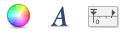
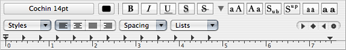

Editing Entries
Editing Entries
Tip: double-click in the empty entry space to create a new entry quickly.
It is not necessary to save your entries. When you select a new entry or when you quit the program, Journler saves the changes you've made to the current selection. Autosaving also ensures that the selected entry is saved at a regular interval. You may still manually save an entry by choosing Save from the File menu. For information on exporting an entry as an independent file, see Exporting & Printing.
Formatting an Entry
Journler provides immediate access to the standard Colors and Fonts panels as well as the Ruler. Select your text by holding down the mouse and dragging it across the words and sentences you would like to change. Click once on the Colors or Fonts toolbar button. From here you can alter the color and style of your entry's text.

Fonts, Colors, and Rulers
If you do not like the default font used for new entries or the fonts and colors used in Journler's tables and entry header, you may personalize them from Journler's Appearance Preferences pane.
To make other changes to the format of your entry's text, click on the Format menu and select either the Font or Text submenu. You can do everything from underlining or italicizing text to changing the alignment of a paragraph. These options function as you would expect them to in any word processing program.

Journler uses the same text technology as TextEdit and as such is a full featured text editor. If for example you would like to apply more specific alignment settings to your entry's text, use the built-in Ruler. From the Format menu choose Show Ruler. Journler displays the ruler at the top of the entry's text just below the header. From here you can modify the text's style, aligment, and tab as well as paragraph spacing.

Lists, Tables and Spacing
For more specific formatting try a list, table, or detailed spacing. From the Edit > Insert Special menu select Insert Table or Insert List. Journler will display the appropriate panel. Customize the text's spacing by choosing Spacing from the Format > Text menu.Lists are a handy way to get organized. Journler supports the list text technology introduced in Mac OS 10.4. Once you have begun a list there there are a few keyboard actions to be aware of.
- Press return once to add a new item to the list at the current indentation.
- Press return twice to end the list.
- Press tab once to indent the current item one additional level.
- Press tab while holding shift to un-indent the current item, moving it back a level.
Tip: Transform the selected line into a list item with the keyboard shortcut Option-Tab.